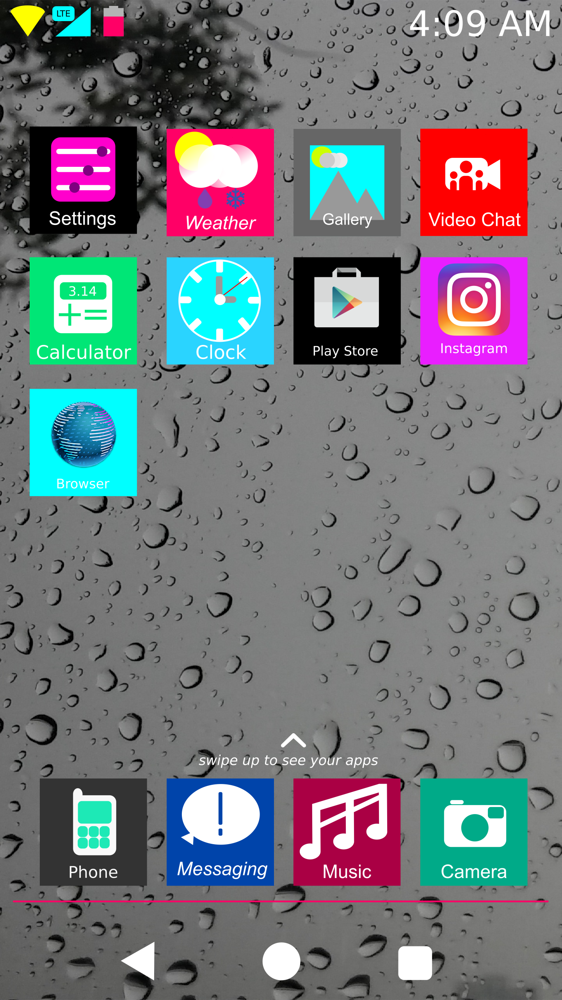

HOSP - UI Introduction
UI Intro - How to use Hevena OS
Here is the OS booted into the Home Screen. The stock Hevena Launcher is very simple. Also, the preloaded apps are very minimal to fit the basic functions you need. Please note that the Play Store app and the Instagram app are just there to show that third-party apps' icons are also boxed and color-coded. These are literally the only apps preloaded (you can optionally also flash gapps and others, however.) If you swipe to the left, something happens (we'll get to that in a moment), but if you swipe up:
The app drawer appears. It has a white background, and all your apps are in a vertically-scrolling format. Simple to use right?
I should take some time here to explain about the icon layout. you may have noticed that the top icon layout doesn't appear to be layed out like normal. This is a personal irritation of mine about other android variants: the top icons do not have any order seemingly to them. often, they become a clustered mess with notification icons and other random things. In Hevena OS, there are no notification icons or anything else on top that is unneccessary. On the left there are: a WiFi signal indicator that is color-coded yellow, a cellular signal indicator that is color-coded a tronish blue (With appropriate LTE and HSPA badges), and a battery level indicator that is mainly a magenta color, but sometimes can be a white depending on the color of the background, and a clock on the right hand sign. Additionally, all Hevena system apps are color coded on the top status bar and bottom navigation bar. The entire top has a purpose and is unified.
Here is one of the key UI innovations Hevena OS will have. Android was revolutionary with its original version because it featured a center where all of your notifications could be displayed at once, but since the balooning of screen sizes since, it has become harder and more uncomfortable to swipe down the notification shade to get to your quick toggles. No more with Hevena OS. Hevena OS ships with a method of quick toggles that feel much more natural to use, with inspiration from iOS being that your quick toggles are accessed with a swipe up from the bottom. However, android flexibility is still present. Users can edit which quick toggles they want and don't. Additonally, there is access to the current date, as well as finding out when the next alarm is set for. Additionally, there is music control. Users should find it much easier to swipe up from the bootom or simply adjust their grip less with these quick toggles.
.png)
The second main innovation of Hevena OS is the dedicated Notification Screen. You can access this from any screen by swiping to the left on the navigation bar and status bar on any app or homepage (swiping along the navigation bar keeps normal app functions swiping to the left as it is).
Why Redirect Notifications to a separate screen? If it ain't broke don't fix it, right?
While many android users are well-accustomed to their notification dropdowns, in recent years the dropdown shade has become more and more focused on quick settings. This is why Hevena OS contains a swipe-up method of quick settings, and the dedicated notification screen once again gives all of the focus upon notifications once again.